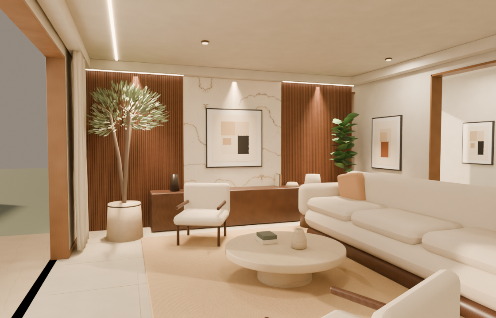

BLENDER · FINISHING REVIEW · NOT INSTALLEDNatural materials. Softer details.
A focused interior finishing pass: woven upholstery, softly shaped cushions and sewn edges, balanced daylight, irregular olive branches, and corrected tabletop contact. Existing room layouts and website camera positions are retained.
 Your reference — visual direction
Your reference — visual direction Refined Blender render — Living room
Refined Blender render — Living roomThese are Cycles renders of the finishing candidate, not screenshots of the website. Website pages, features, typography, colors, camera routes, and current model assets remain unchanged. The browser lightmap and optimized export are the next step after visual approval.
Original living room, from the same camera

Technical checks and source
54 website files verified unchanged. 176 protected walls, cameras and dining-chair objects checked. The candidate adds about 0.7% to the current model's triangle count. Audit record · Editable Blender candidate
Ceiling and corner inspections: